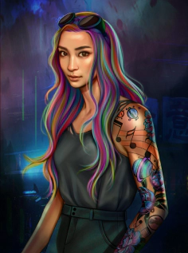

>
Warcross, the hack in the game

Epic in the future, Marie Lu offers us a science fiction. Play, hunt, hack, and the pawn appears. Warcross is Marie Lu’s must-read book.
The novel is about 18-year-old Emika, who is in a lot of debt. She survives as a bounty hunter in Manhattan. In order to escape this reality, she uses her connected glasses and dives into a network game. It’s the greatest game ever invented: Warcross. But while trying to hack the final of the year’s big tournament, she is spotted by the game’s great creator: Hideo Tanaka. However, Emika feels that his intentions beyond what he wanted to create. She knows that he could be crossing the boundaries between the real and the virtual.
In developing the book, Marie Lu was inspired by several concepts. In particular, she was inspired by the game League Of Legends, more precisely by the European and even the world tournaments which influenced her a lot. Moreover, for the structure of the game Warcross, the editor compares it to a mix between Overwatch, Mario Kart but also Harry Potter’s Quidditch. Finally, the personality of the protagonist Emika is inspired by her mother. Her mother has computer skills.
Marie Lu is an American writer who has created more than just Warcross. While she was working at Disney Interactive Studios, she was already writing her first tome called Legend in 2011 which is a dystopian novel. And this novel was supposed to be adapted into a series, however it still hasn’t appeared. This novel was inspired by the film Les Misérables. She wanted to recreate the conflict between Jean Valjean and Javert but in a younger form. Then two books made the trilogy, Prodige and Champions which was published in 2013.
I still remember the exact moment when Hideo Tanaka changed my life. I was eleven, and my father had been dead for only a few months. Rain pounded against the window of the bedroom I shared with four others at the foster home. I was lying in bed, unable, yet again, to force myself to get up and head to school. Unfinished homework lay strewn on my blankets, still there from the night before, when I’d fallen asleep staring at the blank pages. I’d dreamed of home, of Dad making us fried eggs and pancakes drowning in syrup, his hair still shining with glitter and glue, his loud, familiar laugh filling the kitchen and drifting outside through our open window. Bon appètit, mademoiselle! he’d exclaimed, with his dreamer’s face. And I’d screamed in delight as he threw his arms around me and messed up my hair. Then I’d woken up, and the scene had vanished, leaving me in a strange, dark, quiet house. I didn’t move in bed. I didn’t cry. I hadn’t cried once since Dad’s death, not even at the funeral. Any tears I might have shed were instead replaced with shock when I learned how much debt Dad had accumulated. When I learned that he had been sneaking onto online gambling forums for years. That he hadn’t been getting treatment at the hospital because he’d been trying to pay off his debt. So I spent the morning the way I’d spent every day for the past few months, lost in a haze of silence and stillness. Emotions had long vanished behind a cavity of fog in my chest. I used my every waking moment to stare off into space—at the bedroom wall, at the class whiteboard, at the interior of my locker, at plates of tasteless food.
If you want to read more, I recommend you to read the book If we think that technology is necessarily something good, but not all!